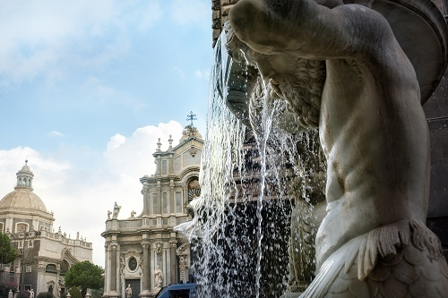
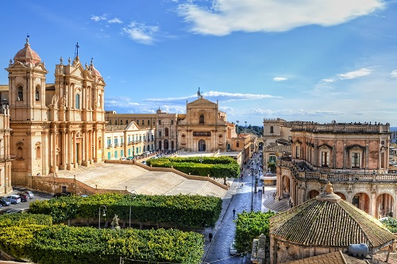
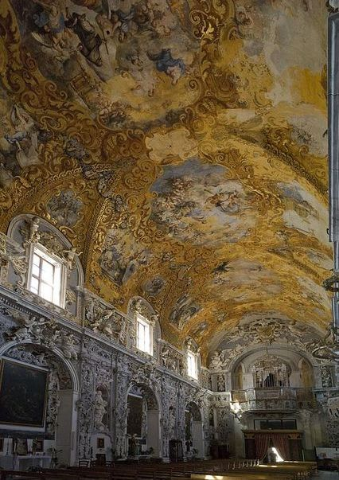
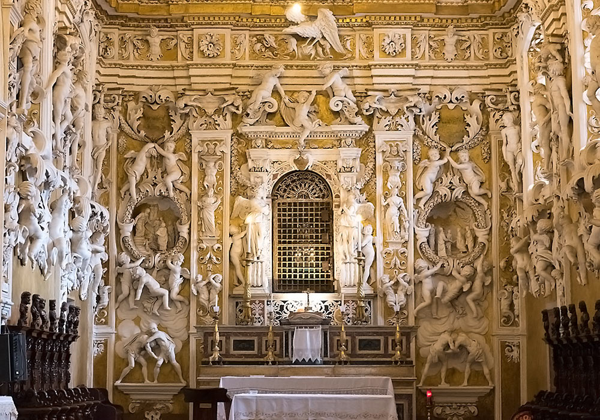

Сицилійське бароко, наше останнє надбання від благородства острова, яке поступово занепало, справляє на нас сьогодні прекрасне враження, яке назавжди залишиться в наших спогадах.
Ми бачимо кам’яні споруди на сонці, світло, що грає зі скульптурними поверхнями, нішами та зграйливими колонами, що піднімаються до неба… Сицилійське бароко є злиттям між землею та небом: білою та напруженою охрою церков та палаців разом із синьому тлі, створіть унікальний і захоплюючий мікс. Прогулянка по вулицях Ното , Модіки та Рагузи та знайомство з нав'язливими та окресленими формами великого сицилійського бароко - це досвід, який неможливо пояснити словами: його треба пережити!
На цьому острові, сповненому скарбів, стиль бароко є одним з найцінніших дорогоцінних каменів. Дивно знати, що вся дивовижна краса в цьому районі - результат катастрофи: землетрусу 1693 року. Землетрус зруйнував Ното і сильно пошкодив Катанію , Рагузу , Модіку , Іспаніюі Мілітелло вбило понад 100 000 людей і почало вражаючу роботу з реконструкції під керівництвом герцога Камастри; будувалися нові міста, поряд із міськими спорудами та надзвичайною сценографією, розкішними палацами та церквами. Там, де земля поглинула життя, зародилося нове життя; нові монстри, ніколи більше не побачені після романської, були зображені на фасадах, щоб пам’ятати, що приховано у підземному світі.
Сьогодні стиль бароко занадто часто обмежується виключно прекрасним Валь ді Ното , який характеризує фактуру архітектурних стилів на Сицилії. У цьому куточку Сицилії можна повністю оцінити тепло і колір сонця, що створює ефект чіароскуро, відбитий на фасадах барокових будівель. У Ното ми побачимо Кафедральний собор, церкву Сан-Доменіко, церкву св. Борромео аль-Корсо та палац Nicolaci di Villadorata; В Рагузі , церква святого Джорджіо, палац Закко і собор святого Джованні Баттісти; У Катанії Кафедральний собор та площа переважають Єпископський палац, Семінарія священнослужителів та Палац Слонів; У Scicli , Палаццо Беневенто; У Модіці , собор Св. Джорджіо та його дивовижна сходи (і, щоб згадати про ці вічні шедеври, в списку продовжується список), є наочним прикладом панування Іспанії на Сицилії: пристрасний і сильний, суворий і раціональний, ритмічний і невловимий, багатий і повний -зобов’язаний.
Путті (пухкі оголені діти, іноді крилаті), маски та гротескні обличчя підтримують ошатні балкони на палацах; геометричні та лінійно-змішані форми зображені на вигнутих фасадах церков; кручені колони так витончено піднімаються вгору, а дзвіниці - як ювелірні вироби у світі. Не кажучи вже про інтер’єр: змішаний мармур, молдинги, фрески, мармурові інкрустації та скульптури прикрашають нефи соборів та інтер’єри палаців, а вони запрошують око затриматися на дорогоцінних деталях та відкрити нові точки зору.
Давайте поїдемо до Мазара-дель-Валло , поблизу Трапані , і відвідаємо церкву Сан-Франческо : це прекрасна церква, побудована в нормандському арабському стилі в, а згодом перетворена в бароковий стиль. Давайте подивимось на це у всьому його блиску завдяки реставрації, розпочатої в 1977 р. Для усунення збитків від землетрусу Беліце (1968).
У Палермо , справжній тлумач найвишуканішого і елегантного бароко був , безсумнівно , Джакомо Serpotta . Він був скульптором і декоратором, який прославився своїми молдингами і розвинув революційну техніку алюстратури , якою він також ділився з братом Джузеппе та сином Прокопіо. Серед його творів найціннішими є: Ораріо ді Санта-Сіта та Ораріо-дель-Росаріо , Церква Сан-Доменіко та Церква Святого Франческо Ассізі .
Брати Джузеппе і Джакомо Серпотта прикрасили маленьку Капеллу Палатіну («Палацова каплиця») у Кастелло Вентімілья ( замок у Кастельбуоно ).